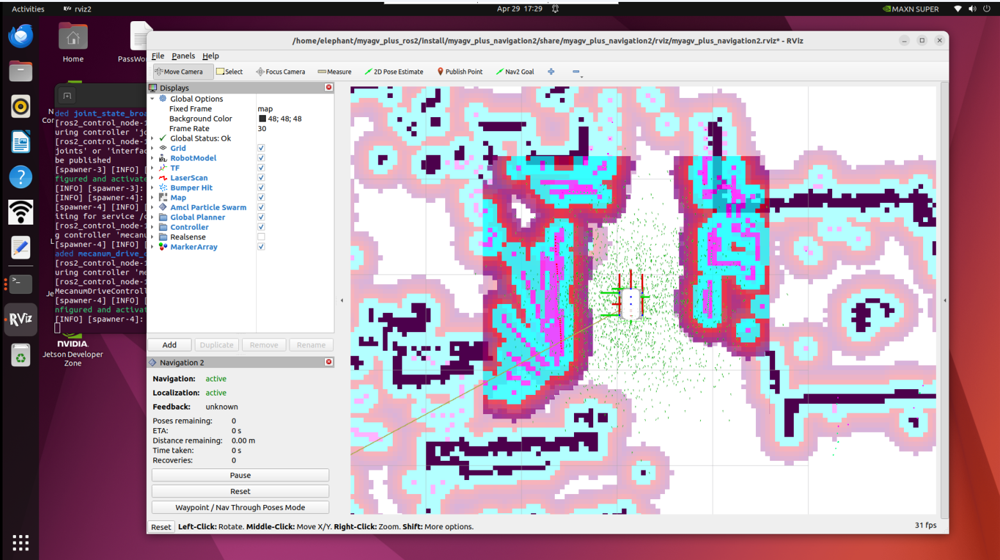
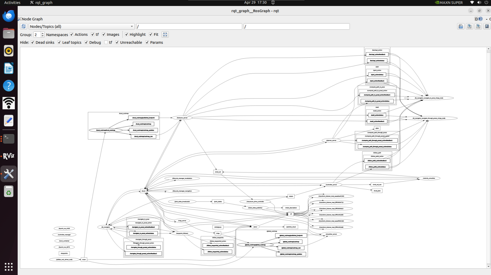
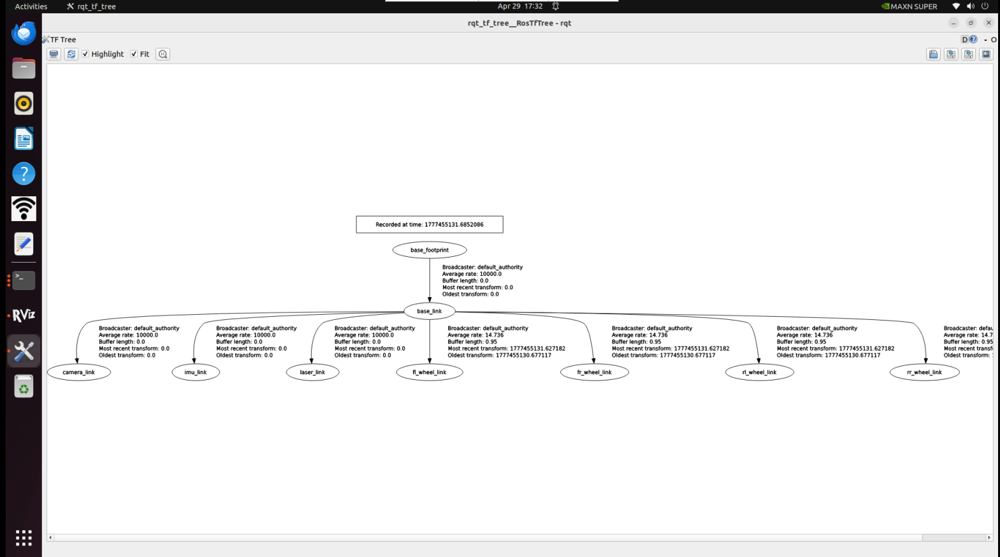

使用常见的 ROS2 工具
- 启动文件
ROS 2 Humble 中的启动文件是同时启动多个节点的核心手段。它能自动管理节点生命周期，方便对每个节点进行配置、命名空间设置、参数加载等，极大简化多节点程序的运行。
（1）<launch> 标签
<launch> 标签是启动文件的根标签。所有启动文件都以 <launch> 开始，以 </launch> 结束，所有配置标签必须写在两者之间。
<launch>
……
……
</launch>
（2）<node> 标签
<node> 标签是最核心的配置项，用于启动一个 ROS 2 节点。属性相比 ROS1 有小幅调整，常用格式如下：
<node pkg="package-name" exec="executable-name" name="node-name" />
| 标签属性 | 属性功能 |
|---|---|
| name="NODE_NAME" | 为节点指定名称，覆盖代码中定义的节点名称 |
| pkg="PACKAGE_NAME | 包含节点的软件包名称 |
| exec="FILE_NAME" | 节点的可执行文件名 |
| output="screen" | 向终端屏幕输出节点的标准输出；默认为日志文件 |
| respawn="true" | 设置为 true 时，节点会在终止时自动重启；默认为 false |
| ns = "NAME_SPACE" | 命名空间，为节点内的相对名称添加命名空间前缀 |
| args="arguments" | 节点所需的输入参数 |
（3）<include> 标签
该标签用于在当前启动文件中，引入另一个 ROS 2 启动文件，实现模块化配置。
| 标签属性 | 属性功能 |
|---|---|
| file ="$(find pkg-name)/path/filename.launch.py" | 指定要包含的文件 |
e.g.
<include file="$(find demo)/launch/demo.launch.py" />
（4）<remap> 标签
用于话题重映射，实现节点间话题名称的适配，无需修改代码，用法与 ROS1 完全一致。
例如，节点订阅的 /chatter 话题，需要重映射为 /demo/chatter：
<remap from="chatter" to="demo/chatter"/>
（5）<parameter> 标签
<parameter> 标签用于向参数服务器设置单个参数。
例如，添加一个值为 1 的整数参数 demo_param：
<parameter name="demo_param" type="int" value="1"/>
（6）<parameters> 标签
<parameters> 标签用于从 YAML 文件批量加载参数。
用法如下：
<parameters from="$(find pkg-name)/path/name.yaml"/>
（7）<arg> 标签
<arg> 标签作为启动文件的局部变量，仅用于启动文件内部传参，与节点逻辑无关。
语法如下：
<arg name="arg-name" default="arg-value"/>
Rviz2
rviz2 是 ROS 2 Humble 官方的三维可视化工具，完全适配 ROS 2 通信架构，兼容各类机器人平台。
它可以可视化显示机器人模型、传感器数据（激光雷达、点云、相机）、TF 坐标变换、导航路径、地图等核心信息，同时支持通过界面交互控制机器人。

- Qt Toolbox
计算图可视化工具（rqt_graph）:
rqt_graph 工具实时展示当前 ROS 2 系统中节点与话题的通信关系。
rqt_graph
成功启动后，将显示计算图表，如下图所示。

TF 关系可视化工具 (rqt_tf_tree)
rqt_tf_tree 工具以图形方式显示运行节点之间的当前 TF 关系。要在运行图形构建功能时启动该工具，请使用以下命令：
ros2 run rqt_tf_tree rqt_tf_tree
成功启动后，将显示 TF 关系图，如下图所示。
